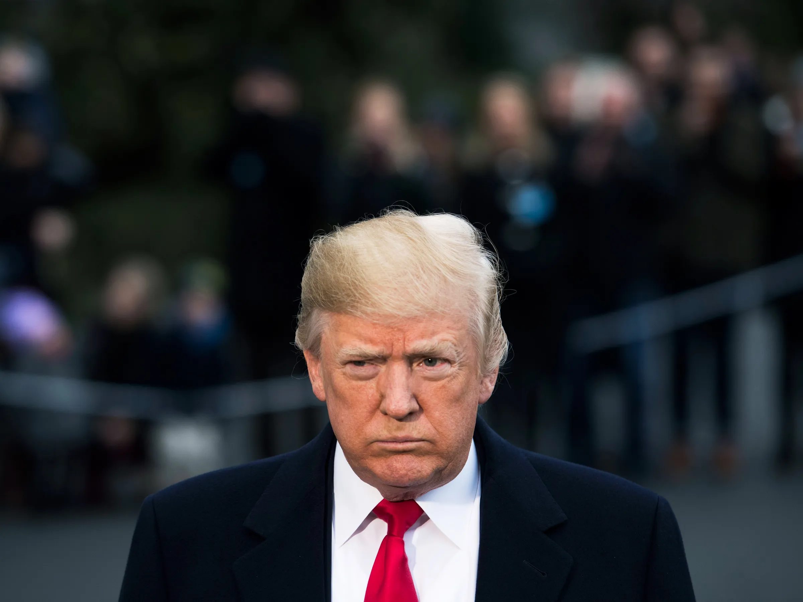

Is Trump Making the World a Safer Place?

There is an argument that Trump is making the world a safer place by pursuing a deal with Russia to end the war in Ukraine. This is certainly what Trump is trying to portray. For three years, Ukraine has been a hotspot with the potential to trigger a wider conflict—even a third world war. All it takes is one mistake, such as a Russian missile killing a group of American experts, for the war to escalate rapidly. By working to end this war, Trump is effectively cooling down this geopolitical flashpoint and reducing the chances of a larger global conflict. But it’s not as simple as that.
From their speeches during the election campaign and subsequent public statements, it is evident that both Trump and JD Vance believe Russia is not the primary threat—China is. Also, for years, Trump has argued that Europe is not doing enough for its own defense and that the U.S. should not be footing the bill for European security. It appears that in his second term, he is determined to act on these views.
The U.S. has underwritten security in Europe for decades, but this seems poised to change. It appears likely that Trump has already agreed to Putin’s conditions for a ceasefire. This can be inferred from the fact that Russia is making gains on the battlefield while Ukraine is on the verge of losing U.S. support, putting Russia in a strong negotiating position. And if Trump remains confident that a deal will be reached, there is little reason to believe that Putin has made any significant concessions, particularly given his current military advantage.
So if this is where we are at the moment, what Trump is trying to do next is to pressure Ukraine into accepting this deal favouring Russia while persuading European leaders to support it. Ukraine will have little say in the matter and will be forced to accept geopolitical realities as they unfold. What happens next hinges on whether Trump can convince European leaders to align with his position on Ukraine. There are two possible outcomes:
1. Trump Persuades European Leaders to Support His Position on Ukraine:
If Trump cannot bring Europe on board, he will struggle to exert enough pressure on Zelensky to accept a deal. This is because Zelensky will likely decide to continue fighting with European support replacing America. However, if European leaders align with Trump and tell Zelensky that they will withdraw support if the U.S. does, he will have little choice but to comply.
To achieve this, Trump would need to offer Europe something in return. The most significant demand from European leaders would likely be for the U.S. to continue underwriting security in Europe. While this is not Trump’s preferred policy, he may calculate that if Europe increases its defense spending, it could be a compromise worth considering—especially if it allows him to claim credit for ending the war and securing peace.
This, however, will not be easy for European leaders to accept even if Trump is willing to offer it. But if they refuse to support the U.S. position and pressure Ukraine into a deal, they must consider the consequences of a full U.S. withdrawal from Ukraine—and potentially from Europe altogether. In this scenario:
a) Ukraine will be lost to Russia. Europe does not have the capacity to replace U.S. support. While European nations may be able to bite the bullet and find funding for the war, they lack the military capabilities to match U.S. aid. Eventually, Russia would win, possibly taking a larger portion of Ukraine.
b) Europe will have to defend itself, necessitating major increases in defense spending at the expense of other domestic priorities—an unpopular move for any politician. This shift also carries additional risks, which bring us to the second scenario.
2. Trump Fails to Bring European Leaders to His Position on Ukraine:
If Trump is unwilling to offer European security guarantees or if European leaders reject a deal that effectively abandons Ukraine, then each European country will be forced to secure its own defense.
would lead to rapid military expansion, with nations like Germany revamping their defense industries and potentially developing nuclear weapons. Countries need to think seriously about their own survival in a world where there is no overarching government to arbitrate should conflicting interests arise. Therefore if a country doesn’t have security cover from another country they will have to provide this on their own.
Each country would pursue independent military policies, which historically has led to terrifying outcomes. While Europe currently exists within the framework of the EU, the Union has endured largely because security concerns were managed collectively, with the U.S. acting as a stabilizing force. Without that, European nations may return to competing geopolitical strategies—something history has shown to be very dangerous.
All indicators suggest that Europe is already moving in this direction. If European leaders recognize the risks and the U.S. remains willing to underwrite European security in exchange for their backing on Ukraine, it is likely they will pressure Zelensky to accept a deal favorable to Putin. In this case, Ukraine would be the only real loser, but Europe might gain continued stability.
On the other hand, if the U.S. withdraws from Europe entirely and leaves each nation to manage its own defense, Trump’s actions will have made the world a far more dangerous place.
Comments